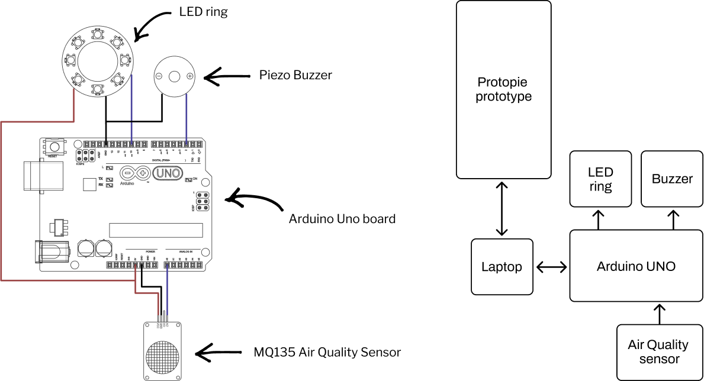

Overview
AirPal is a friendly companion that visualizes your “health battery” against air quality. Time spent in pollution discharges your PAL and makes it look sick; spending time in cleaner, greener spaces recharges it. The goal is to make air quality tangible and motivate small, healthier routines.
The whole group contributed equally to the whole process of the creation and development of this project
- Figma
- Arduino
- ProtoPie
- Illustrator
Concept
City life is stressful: polluted air, tight schedules, little time for self‑care. AirPal borrows from Tamagotchi‑like play—by taking care of your PAL, you also take care of yourself. Clear visuals (battery/face), small celebrations, and a social layer help make healthy choices stick.
How It Works
By being exposed to polluted air for more than one hour, one notch of the LED circle will power off. A sound will alert you only when your battery completely runs out. You can check your PAL’s status though the app: if you lose battery it gets sick.
To recharge, you need to spend time where the air is clean. Every hour spent in nature will recharge one notch and your PAL will gradually feel better. Each time you reach a full charge you’ll earn points and advance in the rankings.
AirPAL allows you to join a network of people with whom you share the same interests. You can challenge your friends in the rankings, and break old bad habits together, like having a nice walk in the park.
Prototype
The hardware
To build our prototype we used an Arduino Uno board, the MQ135 Air Quality Sensor, a Piezo Buzzer and a LED ring, connecting them in the following scheme. All sensors and actuators were connected to the Arduino board, which was connected to the laptop both as a power source, and to also connect to the software prototype (made in Protopie).
All of these elements were then positioned into a 3D printed case with holes to make the air quality sensor work properly and others to show the LEDs to the user.
Design
The following are the main elements that define AirPal:
- Feedback: only positive nudges; celebrate achievements instead of shaming.
- Cute character: an interactive PAL to engage the user to make the experience light and fun.
- Personalization: change PAL color and nickname.
- Gamification: simple ranking to encourage group activity in green areas.
Outcomes
- Functional prototype combining sensor data, LED feedback, and app simulation.
- Showed that playful, social framing can motivate healthier air‑quality habits.
- Next: explore wearables or public displays; integrate official AQI APIs.
Credits
Course: Hardware & Software Technologies for Design (part of MSc in Digital & Interaction Design at Politecnico di Milano)
Professors: Paolo Perego
Team: Alessandra Sgariglia & Erika Caffo